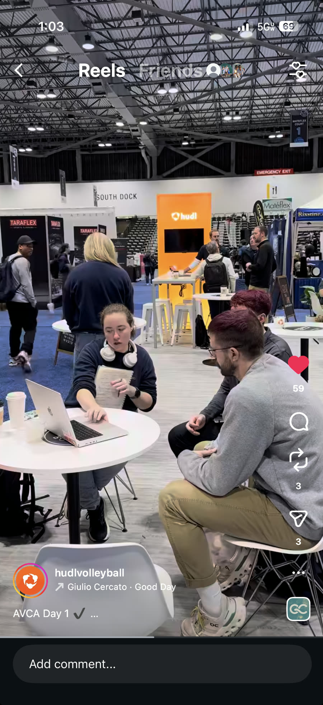
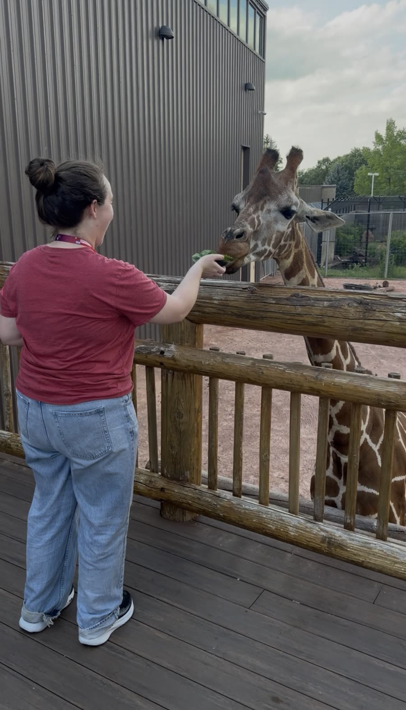
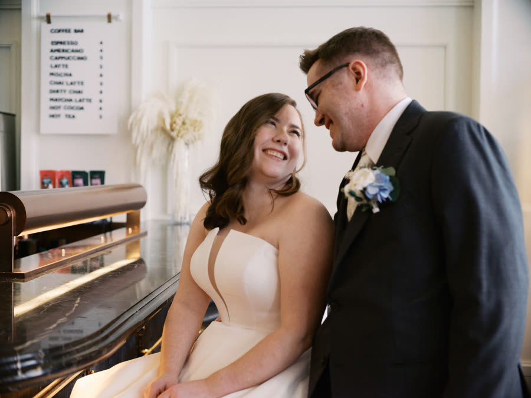

About me
Hi, I’m Hannah.
I’m a product designer who likes solving the messy problems behind the scenes — the workflows, systems, and information structures that make products work. I specialize in turning complex data and processes into experiences that help people find clarity and take action.
I love the kind of problems that don't have obvious answers, the ones that require curiosity, experimentation, and a lot of whiteboarding before the interface ever takes shape.

6
years designing software people use
Based in
Des Moines, Iowa
Currently at Work
Designing the end to end for volleyball users from upload to data generation to coaches and athletes using the product. I'm helping lead the path for new AI powered review, reporting, and search patterns.
Reading
He Who Fights With Monsters — Travis Deverell
Fuelled by
1 daily cappuchino, light roast, ideally in my soup mug
Skills
DesignAsk me about
- The operational problem I couldn't stop thinking about
- Why my favorite design solutions are the ones without a UI
- Hot Pink Comic Sans - the best note taking font and color
- My 3 cats: Pokè, Chowder, and Garbanzo
Off the clock
- Taking an art or dance class. Metalsmithing has been my favorite
- Building some kind of app. Currently I'm working on a drawing/animation app
- Wondering why my cats are screaming this time
- Enjoying the new-ish Pal World 1.0, aka Pokèmon with guns
Currently at Home
I love designing products so much I do it in my free time. I had the itch to start getting back into animating vector art again, but wanted to do it on my iPad with the rest of my drawing and note taking tools. But I kept getting annoyed with the quality of the projects. So me and Claude are building what I want.



Experience
-
Hudl
Jan 2022 – Present-
Senior Product Designer 1.5 yrs
-
Product Designer 3.5 yrs
-
-
Blue Cross Blue Shield
Feb 2021 – Jan 2022-
Product Designer
-
-
Techstars
Sept 2020 – Dec 2020-
Multimedia Designer
-
-
Iowa State University
Sept 2020 – Mar 2020-
Freelance Videographer
-
What others say about me
"Not only did Hannah build out some amazing prototypes for AVCA but she also attended the event, spent time with users and brought real value for Hudl. Having her there was seen as a game changer and showed not only what she is capable of but a great example of what we can do when we show up Feedback from the event - ""Hannah has a real gift for taking complex features and turning them into “lightbulb moments”
Rich Vaughn, Design Director at Hudl
I think a lot of Hannah's recent volleyball work has been really inspiring, with lots of references back to it from others in different conversations. I also think she's taken in thoughts and feedback from others well, and presented her designs to the team for that in a really useful manner. So it's not just the quality of the work (which is great), but that she's done it inclusively and supportively
Nat James, Lead Data Viz Designer at Hudl
Hannah has consistently demonstrated excellence as a product designer and embodies all of Hudl's core values in her day-to-day work. She listens attentively to feedback and rapidly turns ideas into high-quality designs. When our previous designer left, she stepped up without hesitation to support Squad 404, particularly with facility streaming and tournament scheduling—going above and beyond to ensure these critical projects didn't skip a beat. What really sets Hannah apart is her deep understanding of our customers. She doesn't just design for the sake of design—she digs in, researches how our users actually schedule tournaments and creates streamlined, intuitive experiences that minimize effort on their end.
And let’s not forget—her designs are not just beautiful, they’re also practical. She has this amazing ability to align the design so that the engineering team can deliver on time, which has been key to meeting our MVP deadlines.
Rick Clover, Lead Developer at Hudl
Hannah is my go-to-girl. If I needed something knocked out quickly and done right the first time, I would assign it to Hannah. While she is the youngest and the least experienced team member, she does have a robust design process and follows directions. She listens and writes down what needs to happen, then, more importantly, executes those directions.
If you ask her how long she needs to deliver, she never takes longer than she estimates either; Hannah always has on time or early work. In addition, she fosters relationships with the stakeholders and other team members. Her work product is always on point, and she is always thinking, "how can I improve this to make it a better experience for the audience" not just the user, but also the viewer of the wireframes. She is one of the most valuable assets that we have in the Wellmark UX team.
Charity Jazten, UX Design Manager at Blue Cross Blue Shield
Hannah has such a diverse repertoire of design skills. Through the Techstars Iowa program, we were lucky to have Hannah help us create an animated introduction for Civic Champs. She led us through that process end-to-end including storyboarding, design, and the final animation. In addition, I have been really impressed by the work she has done for other companies in our cohort including graphic design for pitch decks, icons, zoom backgrounds, etc. It’s rare to find a creative who can design, craft story, and understands the technical work involved for video creation. Hannah is the total package!
Geng Wang, CEO of Civic Champs